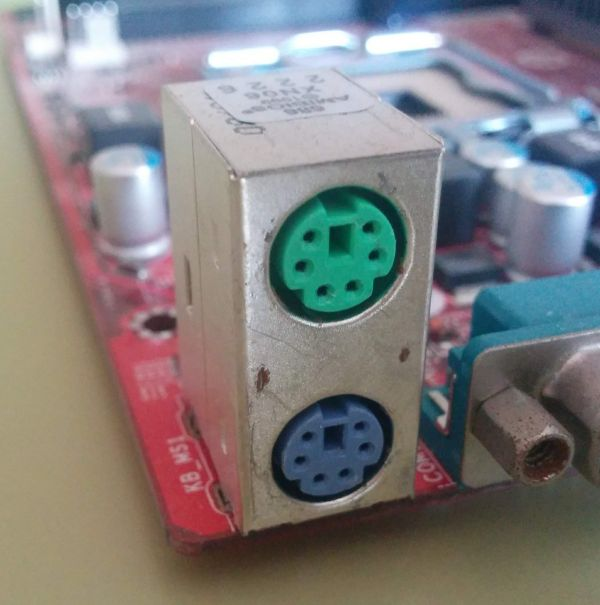
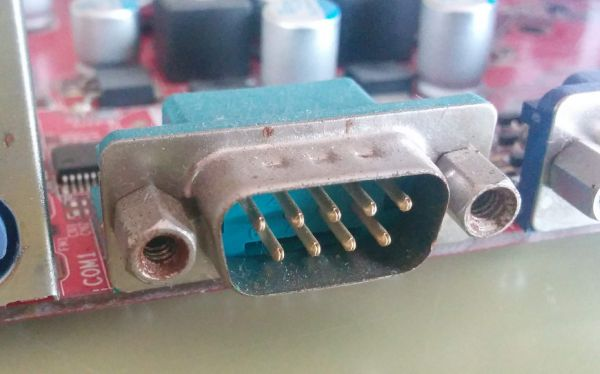
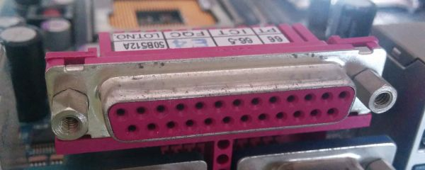
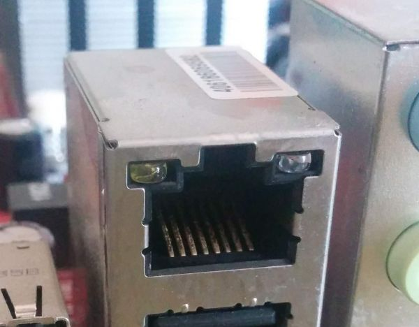
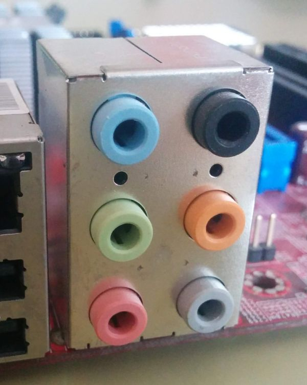

Los conectores externos (Back Panel o Rear Panel I/O) sirven para conectar los dispositivos periféricos al ordenador. Es decir, aquellos que se encuentran fuera del chasis del ordenador y que se conectan sin necesidad de abrir el mismo. A estos conectores se les suelen conocer con el nombre de puerto. Además nombraremos unos botones que suelen incluir algunos tipos de placas bases más avanzadas.

Los puertos PS/2 sirven para conectar el teclado y el ratón. Normalmente las placas incluyen dos puertos PS/2 idénticos; sin embargo, el teclado y el ratón se tienen que colocar en su conector correcto, de lo contrario no funcionaría. El puerto de color verde es el del ratón y el de color lila es el del teclado. Actualmente están desapareciendo en favor de los dispositivos USB, y alguna placas bases sólo incluyen un puerto que colorean mitad de verde y mitad de lila, indicando que puedes conectar o el teclado o el ratón, pero sólo uno de ellos.

Su nombre proviene de la forma en que se envían los datos, trasmitiendo un bit tras otro en una serie. Son fáciles de reconocer, porque tienen un conector macho Tipo D de 9 o 25 pines. Actualmente obsoletos.

También se les conoce con el nombre LPT o puertos de impresora. La información se envía mediante 8 bits al mismo tiempo en lugar de utilizar un bit como en los serie. Se pueden conectar a ellos las unidades Zip, CD-ROM y DVD-ROM externos, plotters o escáneres. Actualmente obsoletos.

Son puertos para conectar el equipo a una red Ethernet.

Son puertos para conectar los diferentes dispositivos de audio, como son altavoces, micrófono, dispositivos de audio, etc. Se trata de conectores Jack de 3,5mm.